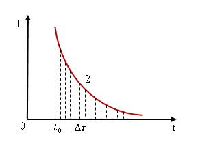

На этом уроке мы повторим явление самоиндукции. Ознакомимся с энергией магнитного поля. Также узнаем о том, как вычислить плотность энергии магнитного поля.
Необходимо выяснить, откуда берётся энергия и как её рассчитать?
Рассмотрим опыт. Пусть имеется электрическая цепь, в которой катушка с индуктивностью (L) последовательно соединена с лампочкой и через переключатель может быть замкнута либо на источник постоянного тока (\( \varepsilon \) ), либо на резистор с сопротивлением (R) (рис.1).
Рис. 1
Если в цепь включить амперметр, то можно получить график зависимости тока в цепи от времени. Сначала, замкнём катушку на источник ЭДС – в цепи будет протекать ток І (рис. 2).
Рис. 2
Затем, в некоторый момент времени \( t_0 \) переключим ключ, замыкая катушку на резистор R – в цепи будет протекать убывающий ток. С момента времени \( t_0 \) до полного исчезновения тока пройдёт определённое время, в течение которого будет происходить перенос заряда в цепи катушки и резистора. Следовательно, будет совершаться работа – убывание тока в катушке вызовет явление самоиндукции и в ней возникнет ЭДС самоиндукции. Разобьём участок 2 движения тока на бесконечно малые интервалы времени \( \Delta t \), такие, что на каждом интервале изменения тока можно считать линейными (рис.3).

Рис. 3
На каждом таком участке будет совершаться работа численно равная произведению ЭДС индукции на переносимый за этот интервал времени заряд
\( \Delta A = \Delta \varepsilon_i \cdot \Delta q \) (1.2)
\( \varepsilon = -L \cdot \frac{I}{t} \) (1.3)
Представим выражение для ЭДС самоиндукции в работу на интервале времени \( \Delta t \)
\( \Delta A = -L \cdot \frac{\Delta I}{\Delta t} \cdot \Delta q \) (1.4)
Отношение перенесённого заряда \( \Delta q \) к интервалу времени \( \Delta t \) является средним значением тока на этом элементарном интервале времени.
\( \Delta q = I \cdot \Delta t = \frac{I}{2} \cdot \Delta t \) (1.5)
Тогда выражение для работы на элементарном интервале времени примет вид.
\( \Delta A = -L \cdot \Delta I \cdot \frac{I}{2} \) (1.6)
Если просуммировать работу по всем элементарным участкам \( \Delta t \) от \( t_0 \) до 0 получим выражение для полной работы за весь интервал времени.
\( A = L \cdot \frac{I^2}{2} = W_m \) (1.7)
Такая работа пойдёт на нагревание проводников внутри катушки замкнутой на резистор.
Выразим энергию магнитного поля, через параметры магнитного поля. Для катушки индуктивность равна произведению магнитной постоянной на объём катушки и квадрат числа витков на единице длины.
\( L = \mu \cdot \mu_0 \cdot V \cdot n^2 \) (1.8)
\( n = \frac{N}{t} \) (1.9)
Модуль магнитной индукции катушки определяется соотношением (1.10).
\( B = \mu \cdot \mu_0 \cdot I \cdot N \) (1.10)
Тогда для энергии магнитного поля получим выражение (1.11). Разделим выражение для энергии магнитного поля катушки на её объём, считая, что всё магнитное поле сосредоточено в объёме катушки (1.12).
\( W_m = \frac{B^2}{2 \cdot \mu \cdot \mu_0 } \cdot V \) (1.11)
\( \omega_m = \frac{B^2}{2 \cdot \mu \cdot \mu_0} \) (1.12)
Развивая теорию электромагнетизма, Джеймс Кларк Максвелл показал, что полученное выражение для длинной катушки справедливо для любых магнитных полей, а полученная величина называется плотность энергии.
При замыкании цепи ток нарастает не мгновенно, а в течение некоторого времени, поскольку источник тока должен совершить работу против ЭДС самоиндукции. Эта работа аккумулируется в магнитном поле, которое окружает проводник с током. В последствие, энергия магнитного поля преобразуется в работу вихревого электрического поля, которое возникает в проводнике после размыкания цепи и, затем, некоторое время поддерживает индукционный ток в этом проводнике. Энергия магнитного поля вычисляется по формуле половина произведения индуктивности проводника на квадрат силы тока, протекающего через проводник.
\( W_m = \frac{LI^2}{2} \) (1.13)